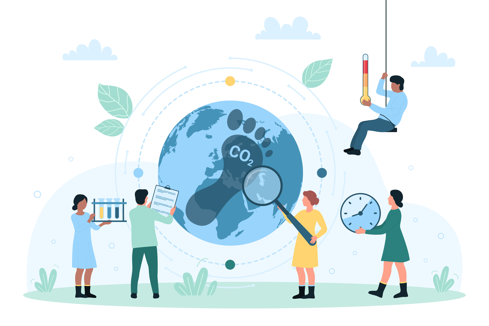

Axe transversal C. Impact environnemental
Karën Fort
Professeure des universités
Loria
Romain Sérizel
Maître de conférences
Loria

Un thème transversal important, souvent évoqué de manière indirecte, concerne les enjeux environnementaux liés à nos projets de recherche en TAL et en IA. Le développement et l'usage croissant des technologies numériques, en particulier des grands modèles de langage (LLM), sont extrêmement énergivores. Il est donc essentiel d'adopter une démarche sobre en énergie, visant à minimiser l'empreinte écologique de nos recherches (principalement les coûts d'entraînement) ainsi que celle de leurs retombées (coût de fonctionnement des algorithmes sur les appareils).
Cette démarche nous invite à explorer de nouvelles pistes, telles que l'optimisation des algorithmes afin de réduire leur consommation énergétique, ou la conception de modèles plus légers et plus efficaces. En cherchant à réduire les ressources nécessaires, tant en données qu'en calcul, nous ouvrons la voie à des innovations qui remettent en question la course à la taille et à la puissance toujours plus grandes, au profit de solutions plus durables et plus respectueuses de l'environnement.
Cette attention transversale portée aux enjeux environnementaux nous conduit à repenser nos pratiques de recherche en TAL et en sciences humaines afin de les rendre plus durables, tout en participant activement au débat sur le rôle et l'impact des technologies numériques dans notre société.
Jusqu'à présent, nous n'avons évoqué que le rôle de l'empreinte énergétique des modèles sur l'environnement (IA durable), mais il convient également de prendre en compte l'impact que l'usage de ces modèles peut avoir sur l'environnement (IA pour la durabilité). À moins que le bénéfice ne vienne d'ailleurs, auquel cas il faut opérer un arbitrage coût-bénéfice, loin d'être évident. Combien est-on prêt à « payer » en termes environnementaux pour un impact sociétal donné ? Ou inversement ?